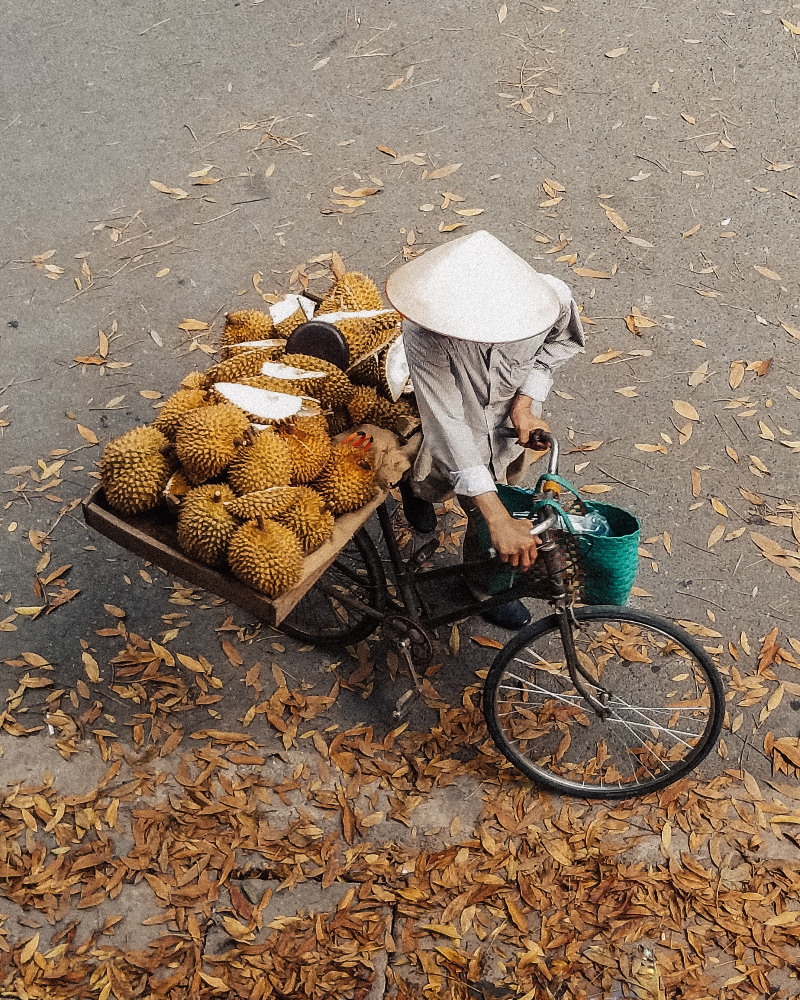

Hồ Hoàn Kiếm
...nằm ngay giữa trung tâm thành phố với tháp rùa cổ kính nằm trên một bán đảo nhỏ giữa hồ.
--Quận Hoàn Kiếm, Hà Nội--
Ngôi chùa Một Cột
...có kiến trúc bông sen có thể nói là độc đáo nhất Việt Nam, cũng là điểm tham quan không thể bỏ qua khi du lịch Hà Nội.
--Quận Ba Đình, Hà Nội--

Nhà hát Lớn
...là nơi diễn ra rất nhiều những sự kiện trọng đại của đất nước.
--số 1 Tràng Tiền, Hà Nội--
Lăng Chủ tịch Hồ Chí Minh
...hay còn gọi là Lăng Chủ tịch Hồ Chí Minh là nơi đặt và lưu giữ thi hài của Người.
--Quảng trường Ba Đình, Hà Nội--

Hồ Tây
...Thời điểm thích hợp nhất để bạn đến nơi đây là lúc hoàng hôn ngắm mặt trời lặn.
--Quận Tây Hồ, Hà Nội--
Phở Thìn
...có phần nước dùng trong nhưng vẫn ngọt vị, thịt bò được dần cho mềm, sau đó tẩm ướp với tiêu, gừng, tỏi và một chút nước mắm.

Chả cá Lã Vọng
...là tên của món chả cá đặc sản Hà Nội. Đây là món chả làm từ cá thái miếng đem tẩm ướp, nướng trên than củi rồi rán lại trong chảo mỡ.

Coffee Trứng Giảng
...Thứ cà phê đậm đà khi kết hợp với vị trứng béo ngậy không ngờ lại được yêu thích đặc biệt.
Người Hà Nội : Nét đặc trưng trong tính cách và lối sống
Từ xưa đến nay, có biết bao bài thơ, bài hát nói về người Hà Nội. Phải chăng đây mà mẫu hình lý tưởng của các nghệ sĩ Việt Nam. Người Hà Nội xưa và nay đã thay đổi khá nhiều, từ quan niệm, tính cách cho đến lối sống. Xong đâu đó vẫn tồn tại cái “chất” của Hà Nội.
20 năm trở lại đây, có nhiều ý kiến khác nhau về người Hà Nội. Đa số mọi người có chung câu hỏi: Thế nào là người Hà Nội? Có ý kiến cho rằng: Sống từ 3 đời trở lên ở đất Hà nội, thì được gọi là người Hà Nội.
Quan điểm này chưa chính xác lắm. Bởi lẽ, nếu xét theo thế hệ sống ở Hà Nội, có nghĩa chúng ta đang xem nhẹ quê hương, bản quán của con người.
Định nghĩa người Hà Nội chính xác nhất ở tính cách, nếp sống của mỗi người. Chúng ta gọi chung là văn hóa người Hà Nội. Bài viết dưới đây giúp bạn có cái nhìn toàn diện về người Hà Nội. Tuy nhiên, không người Hà Nội nào cũng giống hệt
nhau. Họ là những cá thể riêng biệt, có tính cách, lối sống khác nhau. Xong ở họ vẫn toát lên vẻ chung chung, mang đặc trưng của người Hà Nội.
Tính cách của người Hà Nội
Thanh lịch, nho nhã
Không màu mè, phô trương, người Hà Nội chọn cho mình lối sống giản đơn, bình dị. Họ từ tốn, chậm rãi trong giao tiếp và hành xử. Không hấp tấp, vội vàng khi quyết định mọi thứ.
Không quá lời khi nói: người Hà Nội ứng xử văn minh, nho nhã. Họ thể hiện tính thanh lịch trong lời ăn tiếng nói. Nhiều người cho rằng: liệu xã hội có đề cao thái tính cách người Hà Nội. Không đâu, đấy hoàn toàn là sự thật.
Xã hội đã có nhiều thay đổi. Thế hệ trẻ ngày càng táo bạo trong nói năng và hành động. Các em không còn giữ được vẻ bình tĩnh, điềm đạm cho riêng mình. Một phần các em bị ảnh hưởng bởi lối sống hiện đại, một phần đến từ giáo dục gia
đình.
Không ganh đua, đấu tranh thiệt hơn
Phải trải nghiệm nhiều năm ở Hà Nội, bạn mới thấu hiểu tính cách người Hà Nội. Những gia đình lâu đời ở Hà nội (từ 5 thế hệ trở lên), họ có nếp sống điển hình. Từ sinh hoạt gia đình, cư xử giữa các thành viên, cho đến nuôi dạy con
cái. Cuộc sống người Hà Nội có phần bình an và chân thành. Họ không thích ganh đua, hay đấu tranh thiệt hơn. Dễ dàng cho qua những mâu thuẫn vụn vặt. Biết cách chấp nhận cuộc sống, mà không tìm cách luồn cúi.
Trong công việc, người Hà Nội có tinh thần trách nhiệm. Giải quyết công việc có tình có lý. Họ không có thói quen đố kỵ, hay chèn ép người khác. Đây chính là yếu tố làm nên tính cách thanh lịch cho người Hà Nội. Người Hà Nội không
quyết liệt trong công việc. Họ không cố đạt được chức tước, quyền lợi bằng mọi cách.
Người Hà Nội cư xử tế nhị với những người xung quanh. Họ suy nghĩ mọi thứ theo đường thẳng. Nghĩa là: đơn giản, thẳng thắn và chân thành. Họ không suy nghĩ theo kiểu vòng vo, toan tính hay ấp ủ những ý định lâu dài. Người Hà Nội nghĩ
sao sống vậy. Họ không bao giờ làm việc mờ ám sau lưng người khác.
Lối sống của người Hà Nội
Coi trọng truyền thống gia đình
Tính cách đã nói lên phần nào lối sống của người Hà Nội. Người Hà Nội xưa có lối sống tứ đại đồng đường. Nghĩa là: nhiều thế hệ sinh sống trong một ngôi nhà. Bao gồm: ông bà, cha mẹ, con cái, cháu chắt,… 10-14 thành viên trong một gia
đình là chuyện bình thường. Điều này đã tôi luyện cho người Hà Nội đức tính “kính trên nhường dưới”, hành xử tế nhịn, ăn nói lễ phép.
Xã hội hiện đại đã thay đổi quá nhiều, truyền thống văn hóa gia đình không còn như xưa. Các thành viên trong gia đình có cuộc sống độc lập. Họ tôn trọng quyền riêng tư của mỗi người, không ràng buộc nhau bởi lễ giáo phong kiến. Dù
không chung sống trong 1 ngôi nhà, nhưng người Hà Nội vẫn coi gia đình là trên hết. Họ đoàn tụ vào những ngày cuối tuần, giỗ chạp, đầu xuân năm mới, hay các sự kiện quan trọng của gia đình.
Khiêm tốn, khoan nhượng
Người Hà Nội không phô trương, hào nhoáng. Họ vẫn giữ nếp sống khiêm tốn, khoan nhường. Không thể hiện thái quá năng lực, hay trình độ bản thân. Lúc nào ở người Hà Nội cũng toát lên vẻ chậm rãi, nhẹ nhàng. Trong mọi hoạt động, họ cho
mình cách hành xử đơn giản nhất. Không làm lớn chuyện, nếu thấy không cần thiết.
Người Hà Nội thân thiện, dễ gần. Dĩ nhiên điều này tùy từng người. Có người ít nói, có người nói nhiều. Điều đó không đủ kết luận: người Hà Nội kiêu căng hay khó gần. Chẳng qua họ không giải thích (trình bày) nhiều. Còn về bản chất,
họ rất chân thành. Lời nói của người Hà Nội có tính đảm bảo, họ không hay nói dối (hoặc lừa gạt) người khác.
Người Hà Nội sống không toan tính, vụ lợi. Họ không nói chuyện theo kỉa mỉa mai, châm biếm. Nếu không bằng lòng ở việc gì, một là họ nói thẳng. Hai là im lặng, hoặc nói tránh nói giảm. Tuyệt đối không nói xấu hay dựng chuyện cho người
khác.
Trên đây là những nét đặc trưng nhất trong tính cách và nếp sống của người Hà Nội. Phải tiếp xúc lâu dài, bạn mới thấu hiểu được con người Hà Nội. Mảnh đất Thủ đô vốn dĩ xinh đẹp, nhỏ bé. Con người nơi đây chân thành và hòa nhã. Du khách Quốc tế đặc biệt yêu quý người Hà Nội. Họ cho rằng: người Thủ đô thân thiện, dễ gần, nhiệt tình trong giao tiếp và hành động.
Nguồn: hanoi1000.vn